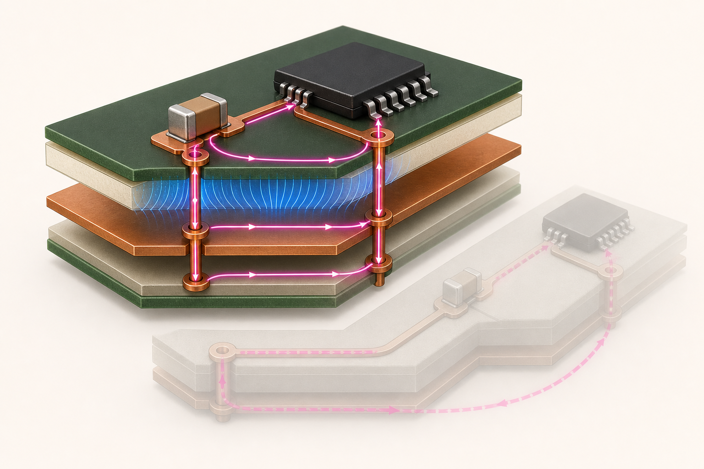

FROM FIRST PRINCIPLES TO THE BENCH
PCB HW
Design & Validation
회로도 속 선을 실제 전자기 구조로 읽고, 오실로스코프의 파형을 근거로 설계와 측정을 판단하기 위한 원리 중심 가이드
회로→장과 파→PCB
→SI · PI · EMC→측정
PART 0 · ORIENTATION
00 지도를 먼저 보자
집중소자 회로에서 실제 PCB까지, 언제 모델을 바꿔야 하는지 배운다.
modelscaleedge ratereturn path
한 문장 직관
좋은 하드웨어 엔지니어링은 복잡한 현실을 무조건 자세히 보는 일이 아니라, 질문에 맞는 가장 단순한 모델을 선택하고 그 모델이 깨지는 경계를 아는 일이다.
회로도에서 선은 전압이 어디서나 같은 이상적인 연결이다. 실제 PCB에서 선은 폭·두께·길이와 주변 유전체를 가진 전자기 구조다. 신호 변화가 충분히 느리고 배선이 짧으면 두 관점은 거의 같은 답을 준다. 그러나 전파 지연이 rise time에 비해 무시할 수 없거나, 전류의 귀환 경로가 끊기거나, 전원 임피던스가 커지면 회로도만으로는 현상을 설명하지 못한다.
VIS 00
모델의 사다리
주파수·edge·구조가 바뀌면 필요한 모델도 바뀐다.
모델 전환의 첫 판단
td / tr ≪ 1 → 집중소자 근사가 대체로 유효
- td
- 배선을 편도로 통과하는 전파 지연
- tr
- 신호의 10–90% rise time. clock 주기보다 edge가 기준이다.
정확한 경계는 허용 오차와 토폴로지에 따라 달라진다. 실무에서는 배선의 편도 지연이 rise time의 약 1/6 이상이면 전송선로 효과를 검토하는 보수적 출발점이 유용하다. 이것은 자연법칙의 경계가 아니라 해석을 시작하게 해 주는 경험적 기준이다.
손으로 푸는 예제 · 10 cm 배선
FR-4 위 신호의 전파 속도를 약 160 mm/ns로 잡으면 100 mm의 편도 지연은 약 0.625 ns다. rise time이 10 ns이면 td/tr = 0.0625로 작다. 같은 배선에 1 ns edge를 넣으면 비는 0.625가 되어 “짧은 선”이라 부르기 어렵다. 두 경우 모두 clock 주파수가 같아도 edge가 다르면 필요한 모델이 달라진다.
상식 점검: 배선 길이가 0에 가까워지면 지연도 0에 가까워져야 한다.
PCB에서
설계 규칙을 외우기 전에 “어떤 전류가 어디서 출발해 어떤 경로로 돌아오는가”, “에너지는 어느 유전체 공간에 저장되는가”, “어떤 구조 변화가 임피던스를 바꾸는가”를 묻는다. 이 질문 하나가 placement, stackup, decoupling, SI, PI, EMC를 같은 물리로 묶는다. 신호선 폭만 계산하고 기준면과 층 전환을 무시하면 닫힌 회로의 절반만 설계한 셈이다.
측정에서
측정값은 DUT의 “진짜 값”을 그대로 읽은 것이 아니다. 측정 시스템은
DUT + test point + probe + cable + instrument + setup의 결합이다. 파형이 이상하면
설계를 의심하기 전에 대역폭 제한, probe loading, ground lead, 샘플링과 trigger 조건을 함께
기록한다. 반복 가능한 측정은 숫자뿐 아니라 구성 사진과 설정을 남긴다.
오개념 경보
“고속 설계는 clock 주파수가 높을 때만 필요하다.”
10 MHz 신호라도 500 ps edge를 가지면 GHz 대역 성분이 존재한다. 반대로 완만한 10 MHz sine은 훨씬 다루기 쉽다. PCB의 전송선로·크로스토크·EMI 문제를 결정하는 첫 변수는 반복 주파수 하나가 아니라 edge와 구조의 전파 지연이다.
셀프 체크
왜 clock period보다 rise time을 먼저 보는가?
공간적 전압·전류 분포를 만드는 고주파 성분은 전이가 얼마나 급한지에 의해 정해지기 때문이다.
모델이 복잡할수록 항상 더 좋은가?
아니다. 필요한 정확도를 넘는 모델은 입력 자료와 해석 비용만 늘린다. 가정을 밝히고 가장 단순한 유효 모델을 고르는 편이 낫다.
이 책을 읽을 때 반복할 세 질문은?
에너지는 어디에 저장되는가, 전류는 어떤 닫힌 경로를 도는가, 측정 시스템이 회로를 얼마나 바꾸는가이다.
PART I · CIRCUIT LANGUAGE
01 단위·전하·전압·전류·전력
전기량을 에너지와 보존법칙의 언어로 다시 정의한다.
chargepotentialcurrentpower
한 문장 직관
전압은 “흐르는 양”이 아니라 단위 전하가 이동할 때 바뀌는 에너지, 전류는 단면을 통과하는 전하의 시간당 변화량이다.
전하 Q의 단위는 coulomb(C)이고 전자 하나는 약 −1.602×10−19 C를 가진다. 전류 1 A는 매초 1 C가 기준 단면을 통과한다는 뜻이다. 전압 1 V는 1 C당 1 J의 에너지 차이다. 따라서 전압은 반드시 두 점 사이에서 정의한다. “이 노드는 3.3 V”라는 말에는 “선택한 0 V 기준에 비해”라는 문장이 생략돼 있다.
정의와 차원
I = dQ/dtA = C/s
V = dW/dQV = J/C
P = dW/dt = VIW = J/s
E = ∫P dtJ = W·s
식을 외울 때 단위를 함께 확인하면 오류를 빠르게 잡을 수 있다. 예를 들어 3.3 V × 0.2 A = 0.66 VA이고 DC 저항성 부하에서는 0.66 W다. 전력에 시간을 곱하면 에너지가 된다. 0.66 W를 10 s 동안 소비하면 6.6 J다.
VIS 01
에너지 장부
전원에서 부하로 전달되는 전력과 열로 바뀌는 에너지를 추적한다.
SOURCE12 V화학·전기에너지
P = VI →
LOAD6 W열·빛·운동
손으로 푸는 예제 · 레귤레이터 입력과 출력
12 V 입력에서 5 V, 1 A를 만드는 선형 레귤레이터를 생각하자. 출력 전력은 5 W다. 입력 전류를 대략 1 A로 보면 입력 전력은 12 W이고 차이 7 W는 주로 레귤레이터에서 열이 된다. 이상적인 switching converter라면 90% 효율에서 필요한 입력 전력은 5/0.9 = 5.56 W, 입력 전류는 약 0.463 A다. topology가 바뀌어도 에너지 보존은 계산의 중심이다.
상식 점검: 수동 회로의 총 출력 전력이 입력 전력보다 크다면 부호나 기준을 다시 확인한다.
PCB에서
trace 폭과 copper area는 단순히 “전류가 많이 흐르니 넓게”가 아니다. 허용 전압 강하, I²R 손실, 온도 상승, 주변 plane의 열 확산, duty cycle을 함께 정한다. ground는 전하가 사라지는 구멍이 아니라 회로가 선택한 전위 기준이자 귀환 도체다. 서로 떨어진 ground 지점은 전류와 임피던스 때문에 같은 순간에도 다른 전압을 가질 수 있다.
측정에서
DMM의 전압 모드는 높은 입력저항으로 두 점 사이 전위를 읽고, 전류 모드는 내부 shunt를 회로에 직렬로 삽입한다. 전류계를 전압원에 병렬 연결하면 거의 단락이 되어 퓨즈나 회로를 손상시킬 수 있다. 전력은 동시에 측정한 V와 I의 곱이며, 시간 변화가 있으면 평균·RMS·peak의 정의를 구분한다.
오개념 경보
“전원은 전류를 밀어 넣고 부품이 그 전류를 받아 쓴다.”
이상 전압원은 전압 조건을 만들고 실제 전류는 연결된 회로의 임피던스가 결정한다. 전원 정격 3 A는 항상 3 A를 강제로 흘린다는 뜻이 아니라, 규정된 전압을 유지하며 공급할 수 있는 범위다.
셀프 체크
전압은 왜 한 점의 절대값이 아닌가?
전압은 단위 전하당 에너지의 차이이므로 반드시 기준점과 측정점 두 곳이 필요하다.
1 A가 의미하는 전하 흐름은?
선택한 단면을 1초에 1 C가 통과하는 비율이다. 전자의 이동 방향과 관습적 전류 방향은 반대일 수 있다.
전력과 에너지의 차이는?
전력은 에너지 변화율 W=J/s, 에너지는 전력을 시간에 대해 적분한 J다.
PART I · CIRCUIT LANGUAGE
02 DC 회로
Ohm, KCL/KVL, 등가회로와 부하 효과를 연결한다.
OhmKCLKVLThevenin
한 문장 직관
KCL과 KVL은 계산 요령이 아니라 각각 전하 보존과 에너지 보존을 회로 언어로 쓴 것이다.
저항 R은 전압과 전류 사이의 비례 관계 V = IR로 이상화한다. 노드에 전하가 계속 쌓이지 않는 정상상태에서는 들어오는 전류 합과 나가는 전류 합이 같다. 닫힌 경로를 한 바퀴 돌고 같은 점으로 돌아오면 전위 변화의 합은 0이다. 부호를 먼저 정하고 끝까지 지키면 “전류가 음수”인 결과도 오류가 아니라 실제 방향이 가정과 반대임을 알려준다.
기본 관계
V = IR선형 저항의 구성 관계
ΣInode = 0KCL · 전하 보존
ΣVloop = 0KVL · 에너지 보존
P = I²R = V²/R저항 손실
직렬 저항은 같은 전류를 공유해 합이 Req = ΣR이고, 병렬 저항은 같은 전압을 공유해 1/Req = Σ(1/R)다. 복잡한 선형 두 단자 회로는 Thevenin 전압원 Vth와 직렬 Rth, 또는 Norton 전류원 In과 병렬 Rn으로 바꿀 수 있다.
LAB 02
전압분배기와 부하 효과
측정기나 다음 단이 붙으면 아래쪽 저항이 병렬로 작아진다.
무부하 2.50 V
부하 연결 2.49 V
오차 −0.50%
손으로 푸는 예제 · 5 V를 2.5 V로?
R1 = R2 = 1 kΩ이면 무부하 Vout = 5×1/(1+1) = 2.5 V다. 하지만 1 kΩ 부하를 연결하면 아래쪽 등가는 1 kΩ∥1 kΩ = 500 Ω이고 Vout = 5×500/(1000+500) = 1.667 V다. 분압기는 기준 전압처럼 보이지만 출력저항이 커서 큰 부하 전류를 공급하는 전원으로는 부적합하다.
상식 점검: 부하 저항이 무한대로 커지면 원래 무부하 결과로 돌아가야 한다.
PCB에서
pull-up, strap, ADC 입력 분압을 설계할 때 DC 저항값만 보면 부족하다. 입력 leakage, 샘플링 capacitor가 만드는 순간 부하, 저항 tolerance, 전원 tolerance, 온도계수를 worst case로 본다. test point에 DMM이나 probe를 연결해도 입력저항·입력용량이 회로의 일부가 된다. 특히 높은 저항의 센서 노드는 오염과 flux residue의 누설에도 민감하다.
측정에서
보통 10 MΩ 입력의 DMM은 1 kΩ 분압기에 거의 영향을 주지 않지만, 10 MΩ 저항으로 만든 분압기에는 큰 오차를 낸다. DMM의 burden voltage도 전류 측정 회로의 동작점을 바꿀 수 있다. 측정기 사양의 입력저항, 입력용량, shunt 값을 회로도에 실제 부품처럼 그려 보는 습관이 좋다.
오개념 경보
“KVL은 어떤 주파수, 어떤 크기의 루프에서도 무조건 성립한다.”
집중소자 회로에서 KVL은 강력하다. 그러나 시간에 따라 변하는 자기 flux가 큰 공간 루프를 통과하면 유도 전기장이 생기며 단순한 스칼라 전위 합만으로 설명하기 어렵다. 이때는 배선의 분포 인덕턴스와 전송선로 또는 Maxwell–Faraday 법칙을 모델에 포함한다.
셀프 체크
KCL의 물리적 뿌리는?
노드에 전하가 무한히 축적되지 않는다는 전하 보존이다. 과도상태에서는 축적 항이 capacitance로 모델링된다.
Thevenin 등가의 장점은?
부하가 바뀔 때 원래 회로 전체를 다시 풀지 않고 Vth와 Rth만으로 전압·전류 변화를 계산할 수 있다.
분압기를 전원으로 쓰기 어려운 이유는?
유한한 출력저항 때문에 부하 전류가 바뀌면 출력 전압도 바뀌고 저항에서 지속적으로 전력이 소모된다.
PART I · CIRCUIT LANGUAGE
03 커패시터와 인덕터
에너지 저장과 연속조건으로 과도응답을 이해한다.
energy storagecontinuitytime constant
한 문장 직관
커패시터는 전기장에, 인덕터는 자기장에 에너지를 저장하므로 커패시터 전압과 인덕터 전류는 이상적으로 순간 점프할 수 없다.
C의 관계 i = C·dv/dt는 전압을 매우 빠르게 바꾸려면 매우 큰 전류가 필요함을 말한다. L의 관계 v = L·di/dt는 전류를 매우 빠르게 바꾸려면 매우 큰 전압이 필요함을 말한다. 스위치를 켜고 끄는 순간의 overshoot, flyback diode, decoupling capacitor, reset delay는 모두 이 연속조건에서 출발한다.
구성 관계와 저장 에너지
iC = C·dv/dtWC = ½CV²
vL = L·di/dtWL = ½LI²
τRC = RC단위 Ω·F = s
τRL = L/R단위 H/Ω = s
1차 회로의 오차는 e−t/τ로 줄어든다. 1τ에서 최종값의 63.2%, 3τ에서 95.0%, 5τ에서 99.3%에 도달한다. “완전히 충전되는 시간”은 수학적으로 무한하지만, 필요한 정확도를 먼저 정하면 실용적인 settling time을 말할 수 있다.
LAB 03
RC 과도응답
R과 C를 바꾸며 같은 지수곡선이 시간축에서 늘어나는 모습을 본다.
τ 1.00 ms
V(t)/Vfinal 63.2%
5τ 5.00 ms
손으로 푸는 예제 · reset RC
R = 10 kΩ, C = 100 nF이면 τ = 1 ms다. 3.3 V step을 인가한 뒤 1 ms의 커패시터 전압은 3.3(1−e−1) = 2.086 V다. 입력 임계값이 0.7·VDD = 2.31 V라면 crossing은 t = −RC ln(1−0.7) ≈ 1.204 ms다. 하지만 실제 reset pin의 leakage, Schmitt threshold, power ramp와 capacitor tolerance 때문에 전용 supervisor보다 불확실하다.
상식 점검: R이나 C가 커지면 변화는 느려지고 τ는 선형으로 커져야 한다.
PCB에서
IC가 edge 순간 요구하는 전류는 멀리 있는 regulator에서 즉시 올 수 없다. package와 plane의 인덕턴스가 di/dt를 방해하므로 가까운 decoupling capacitor가 국소 전하 저장고 역할을 한다. 반대로 relay coil이나 motor를 끊을 때 인덕터 전류의 연속성이 큰 전압을 만들므로 flyback 경로, snubber, clamp가 필요하다. 배선 자체도 nH 단위 인덕턴스를 갖는다.
측정에서
RC 곡선의 10–90% rise time은 약 2.2RC다. scope cursors로 두 지점을 읽어 τ를 역산할 수 있지만, probe input capacitance가 원래 C에 병렬로 더해진다. 높은 임피던스 노드에서는 10× passive probe의 수 pF도 시간상수를 눈에 띄게 바꿀 수 있다.
오개념 경보
“커패시터는 DC를 막고 AC를 통과시킨다.”
회로 동작을 압축한 말일 뿐 원리는 아니다. 커패시터 전류는 dv/dt에 비례한다. 정상 DC에서 dv/dt = 0이므로 이상 C 전류가 0이고, 변화가 빠를수록 더 큰 전류가 흐른다. 실제 부품에는 leakage, ESR, ESL과 breakdown이 있다.
셀프 체크
커패시터 전압이 순간 점프할 수 없는 이유는?
유한한 C에서 순간 전압 변화는 무한한 dv/dt와 전류를 요구하기 때문이다.
5τ가 자주 쓰이는 이유는?
1차 응답 오차가 e⁻⁵≈0.67%로 작아져 많은 실용 조건에서 정착으로 간주할 수 있기 때문이다.
coil을 끌 때 큰 전압이 생기는 이유는?
인덕터가 기존 전류를 유지하려고 v=L·di/dt에 필요한 극성의 전압을 만들기 때문이다.
PART I · CIRCUIT LANGUAGE
04 AC와 주파수
복소수, 페이저, 임피던스, 공진과 Bode 관점을 익힌다.
phasorimpedanceresonanceBode
한 문장 직관
주파수 영역은 시간을 없애는 마술이 아니라, 선형 회로가 각 sine 성분을 얼마나 키우고 늦추는지 따로 보는 좌표계다.
sine은 선형 시불변 회로를 통과해도 같은 주파수의 sine으로 남고 크기와 위상만 바뀐다. 그래서 미분을 jω 곱셈으로 바꾸는 복소수 표현이 편리하다. 실제 square wave는 기본파와 홀수 harmonic의 합이므로 높은 harmonic이 감쇠되면 edge가 둥글어지고, 공진으로 특정 harmonic이 커지면 ringing이 생긴다.
주파수 영역의 핵심
ZR = R위상 0°
ZL = jωL전압이 전류보다 +90°
ZC = 1/(jωC)전압이 전류보다 −90°
f0 = 1/(2π√LC)이상 LC 공진
magnitude 비를 dB로 쓸 때 전압·전류·임피던스처럼 amplitude 비는 20log10(A2/A1), 같은 임피던스에서 power 비는 10log10(P2/P1)를 쓴다. −3 dB는 amplitude 약 0.707, power 절반이다. 위상은 시간 지연과 다르지만 한 주파수에서는 Δt = φ/(360°f)로 환산할 수 있다.
LAB 04A
회전 벡터와 sine
phasor의 x축 투영이 시간파형이 되는 모습을 본다.
LAB 04B
직렬 RLC 공진
R은 peak를 낮추고 넓히며, L과 C는 공진 위치를 정한다.
공진 1.59 kHzQ 3.16
손으로 푸는 예제 · RC low-pass
R = 1 kΩ, C = 100 nF이면 cutoff fc = 1/(2πRC) ≈ 1.59 kHz다. 159 Hz에서는 f/fc = 0.1이라 magnitude는 약 0.995, 위상은 −5.7°다. fc에서는 0.707과 −45°, 15.9 kHz에서는 약 0.0995와 −84.3°다. 한 decade 위에서 약 −20 dB가 되는 1차 pole의 기울기를 확인할 수 있다.
상식 점검: f→0이면 capacitor가 open처럼 보여 출력이 입력에 가까워야 한다.
PCB에서
decoupling, filter, impedance control은 모두 “어느 주파수 범위에서 어떤 경로의 임피던스를 낮출 것인가”라는 문제다. 단일 숫자 capacitance만으로 capacitor를 고르면 self-resonance 위에서 inductive가 되는 사실을 놓친다. digital signal의 “주파수”도 clock fundamental 하나가 아니라 edge를 구성하는 spectrum으로 본다.
측정에서
time-domain ringing의 주기를 재면 공진 주파수 f≈1/T를 추정할 수 있다. FFT는 원인을 찾는 힌트가 되지만 window, record length, sample rate, noise floor에 따라 spectrum이 달라진다. amplitude가 −3 dB인 지점을 scope bandwidth로 읽을 때 probe와 cable을 포함한 전체 경로의 응답임을 기억한다.
오개념 경보
“고주파 전류는 저항이 가장 작은 길로 흐른다.”
모든 전류는 가능한 모든 경로로 임피던스에 따라 나뉜다. 고주파에서는 inductance와 capacitance가 지배적이어서 저항이 조금 낮은 먼 경로보다 loop inductance가 낮은 가까운 귀환 경로에 집중된다. “최소 저항” 대신 “주파수에 따른 최소 임피던스”를 생각한다.
셀프 체크
왜 복소수 임피던스를 쓰는가?
미분 관계를 jω의 곱셈으로 바꾸고 magnitude와 phase를 한 수에 담아 선형 회로 계산을 단순화하기 때문이다.
−3 dB는 전압이 절반이라는 뜻인가?
아니다. 같은 임피던스에서 amplitude는 약 0.707, power가 절반이다.
square wave의 edge가 둥글어진 이유는?
측정 또는 회로 경로가 edge를 구성하는 높은 harmonic을 감쇠했기 때문이다.
PART I · CIRCUIT LANGUAGE
05 실제 부품
기생 RLC와 반도체의 비이상성이 회로를 바꾸는 방식을 본다.
parasiticESRESLoperating point
한 문장 직관
부품의 이름은 지배적인 성질을 말할 뿐이다. 실제 부품은 언제나 R·L·C와 비선형성이 함께 있는 주파수·전압·온도 의존 구조다.
저항은 lead와 패턴 때문에 inductance와 capacitance를 갖고, capacitor에는 ESR·ESL·leakage가, inductor에는 winding resistance·inter-winding capacitance·core loss와 saturation이 있다. datasheet의 “typical” curve는 이상 기호와 실물 사이를 잇는 지도다. nominal 값 하나가 아니라 bias, tolerance, temperature, frequency 조건을 함께 읽는다.
실제 capacitor의 1차 모델
Z(jω) = ESR + jω·ESL + 1/(jωC)
낮은 주파수에서는 1/(ωC)가 지배해 주파수가 오를수록 |Z|가 내려간다. self-resonant frequency fSR = 1/(2π√(ESL·C)) 부근에서는 L과 C reactance가 상쇄되어 ESR 근처까지 내려간다. 그 위에서는 ESL이 지배해 capacitor가 inductive하게 보인다. MLCC의 유효 C는 DC bias에서 nominal보다 크게 줄 수 있다.
논리 기호 안의 analog 회로
output은 유한한 pull-up/pull-down impedance와 package RLC를 가진다. input에는 capacitance, leakage, threshold와 ESD clamp가 있다. VOH/VOL은 정해진 IOH/IOL 조건에서 읽고, VIH/VIL 사이 undefined region을 noise margin으로 관리한다.
push-pull · open-drain · tri-state
push-pull은 두 방향을 능동 구동하고, open-drain은 low만 구동해 external pull-up과 RC rise를 만든다. tri-state는 bus를 놓지만 pin capacitance와 clamp는 남는다. slew/drive 설정은 SI와 EMI를 바꾸는 설계 변수다.
Absolute max는 동작 조건이 아니다
absolute maximum은 넘으면 손상 가능성이 있는 경계이고 정상 기능을 보증하는 범위가 아니다. recommended operating condition, DC characteristic, timing, power-on/off injection 조건을 함께 확인한다.
레귤레이터도 loop다
LDO와 switching regulator는 dropout·current limit·thermal뿐 아니라 feedback loop stability, input/output capacitor ESR·C 조건, startup과 transient response를 가진 동적 시스템이다.
LAB 05
실제 capacitor impedance
C, ESR, ESL을 바꾸며 capacitive–resistive–inductive 영역을 찾는다.
Self resonance 15.9 MHz최소 |Z| 50.0 mΩ
손으로 푸는 예제 · 100 nF decoupling
C = 100 nF, ESL = 1 nH이면 fSR ≈ 15.9 MHz다. 1 MHz에서 ideal capacitive reactance는 약 1.59 Ω이고 ESL reactance는 6.3 mΩ라 C가 지배한다. 100 MHz에서는 C가 15.9 mΩ인 반면 ESL은 0.628 Ω이어서 전체는 inductive하다. “100 nF가 고주파를 모두 bypass한다”는 결론은 패키지와 연결 inductance를 무시한 것이다.
상식 점검: ESL을 줄이면 self resonance가 더 높은 주파수로 이동해야 한다.
PCB에서
같은 100 nF라도 작은 package, 짧고 넓은 연결, 가까운 power/ground via는 loop inductance를 줄인다. MOSFET은 RDS(on)뿐 아니라 gate charge, Miller capacitance, body diode와 SOA를 본다. regulator는 dropout, loop stability, output capacitor 조건, transient response, thermal resistance를 확인한다. 부품 선택은 footprint와 placement까지 포함한 시스템 결정이다.
측정에서
LCR meter가 표시하는 값은 선택 주파수와 등가 series/parallel 모델에 따라 달라진다. semiconductor diode는 DMM diode mode의 작은 전류에서 측정한 forward voltage와 실제 부하 전류의 값이 다르다. rail의 ripple을 볼 때 capacitor 양단을 긴 probe ground로 재면 capacitor가 아니라 측정 loop의 inductive pickup을 크게 볼 수 있다.
오개념 경보
“부품값은 body에 적힌 nominal 값이다.”
nominal은 출발점이다. 10 µF X5R MLCC는 voltage bias, temperature, tolerance 때문에 실제 동작점에서 몇 µF만 남을 수 있다. inductor도 saturation current와 temperature rise current가 다르다. 설계 계산에는 동작 조건의 유효값과 worst case를 사용한다.
셀프 체크
capacitor가 self resonance 위에서 inductive한 이유는?
주파수가 오르면 1/(ωC)는 작아지고 ωESL은 커져 결국 직렬 기생 인덕턴스가 지배하기 때문이다.
MLCC의 capacitance를 어떤 조건에서 확인해야 하는가?
DC bias, 온도, 주파수, tolerance와 aging을 실제 동작점에 맞춰 확인한다.
MOSFET 선택에서 RDS(on)만 보면 놓치는 것은?
switching loss를 만드는 gate charge·capacitance, diode reverse recovery, voltage/current transient, SOA와 열 조건을 놓친다.
PART II · FIELDS & WAVES
06 전자기학의 최소 골격
E, H, B, flux와 Maxwell 방정식의 물리적 메시지를 잡는다.
electric fieldmagnetic fieldfluxPoynting
한 문장 직관
회로가 전달하는 에너지는 전자가 동박 안을 빠르게 달려 부하로 운반하는 것이 아니라, 주로 도체 주변 유전체 공간의 전기장과 자기장을 통해 이동한다.
전기장 E는 전하가 받는 힘의 방향과 크기를, 자기 flux density B는 움직이는 전하와 자성체가 경험하는 효과를 기술한다. 회로 엔지니어링에서는 재료를 포함하기 위해 D = εE, B = μH로 electric flux density D와 magnetic field H도 쓴다. field는 보이지 않지만 capacitance, inductance, coupling, propagation, radiation이라는 측정 가능한 결과를 만든다.
Maxwell 방정식이 말하는 네 가지
식을 풀지 못해도 의미는 설계에 직접 쓰인다. current loop를 줄이면 magnetic coupling이 줄고, 빠른 dv/dt 노드의 면적을 줄이면 capacitive coupling이 줄며, 기준면을 가까이 두면 field가 좁은 공간에 갇혀 외부 결합과 loop inductance가 함께 작아진다. 에너지 흐름 밀도는 S = E × H인 Poynting vector로 표현한다.
LAB 06
도체 쌍 주변의 장과 에너지 흐름
trace와 reference plane 사이 간격이 field confinement를 어떻게 바꾸는지 본다.
도식은 정성적이다. 실제 field는 geometry와 유전체 경계조건을 푸는 field solver로 구한다.
PLATE 06A
마이크로스트립 주변의 E·H field
전기장은 두 도체 사이에서 끝나고, 자기장은 전류를 감싸는 닫힌 고리를 만든다.

PLATE 06B
에너지는 구리 안보다 유전체 공간을 지난다
Poynting vector는 E와 H가 겹치는 공간에서 전원에서 부하로 향한다.

PLATE 06C
Near field에서 far field로
source 가까이서는 반응성 저장 에너지가, 멀리서는 진행파가 지배한다.

Maxwell 방정식에서 PCB의 장까지
전하는 E field의 시작과 끝이다
∇·D=ρ는 free charge가 electric flux의 source임을 뜻한다. 신호 trace의 표면전하 분포는 길이 방향 전압 변화와 주변 E field를 만든다. edge가 진행할 때 “전자가 선 끝까지 즉시 이동”하는 것이 아니라 표면전하와 field의 재배치가 유한한 속도로 전파된다.
전류와 변위전류가 H field를 닫는다
∇×H=J+∂D/∂t에서 ∂D/∂t는 유전체를 가로지르는 displacement current다. capacitor의 dielectric에 전자가 통과하지 않아도 외부 도선의 전류가 연속일 수 있는 이유다. 빠른 switch node의 stray C가 chassis에 common-mode current를 보내는 것도 같은 항이다.
변하는 E와 H는 서로를 만든다
∇×E=−∂B/∂t는 시간에 따라 바뀌는 magnetic flux가 순환 E field를 만든다는 뜻이다. loop area와 di/dt가 커질수록 이 유도 전압이 커진다. 그래서 “ground 저항이 낮다”만으로는 빠른 귀환 경로가 좋은지 판단할 수 없고 loop inductance를 봐야 한다.
경계조건이 field의 모양을 정한다
좋은 도체 표면의 tangential E는 매우 작고, 표면전하가 normal D의 불연속을, 표면전류가 tangential H의 불연속을 만든다. trace 폭·plane 거리·유전체가 바뀌면 이 경계조건을 만족하는 field 분포가 바뀌므로 C′, L′, Z0와 지연이 함께 바뀐다.
Poynting 정리 ∂u/∂t + ∇·S = −J·E는 field energy의 감소, 공간을 빠져나간 전력, 도체에서 열로 바뀐 전력을 하나의 보존식으로 묶는다. 회로의 P=VI는 이 장 에너지 흐름을 단자에서 적분해 본 표현이다.
손으로 푸는 예제 · 작은 capacitance의 에너지
50 pF 구조가 3.3 V로 충전되면 저장 에너지는 ½CV² = 0.5×50 pF×(3.3 V)² ≈ 272 pJ다. 이 전압이 매초 100만 번 0→3.3 V로 충전되고 매번 저항에서 소산된다면 동적 전력의 1차 근사는 C·V²·f = 0.545 mW다. 실제 CMOS에서는 activity factor와 여러 내부 capacitance가 곱해진다.
상식 점검: 전압을 두 배로 하면 저장 에너지와 dynamic power는 네 배가 된다.
PCB에서
microstrip의 field 일부는 solder mask와 공기에, 일부는 laminate에 존재한다. stripline은 두 reference plane 사이에 field가 더 강하게 갇힌다. trace 폭, plane 거리, εr가 capacitance와 inductance per length를 바꾸고 결국 characteristic impedance와 propagation velocity를 정한다. connector, via, plane gap에서 field geometry가 급히 바뀌면 discontinuity가 된다.
source에 가까운 near field에서는 E/H 비가 자유공간 파동 impedance로 고정되지 않고 source의 capacitive/inductive 성격이 강하다. 충분히 먼 far field에서는 E와 H가 결합된 traveling wave로 거동한다. λ/(2π)는 작은 source의 전이 영역을 짐작하는 출발점일 뿐, board·cable 크기와 geometry에 따라 경계가 달라진다.
측정에서
near-field probe는 E 또는 H field에 민감한 작은 sensor로 board 위의 결합 hotspot을 찾는다. 절대 방사량을 바로 말해 주는 안테나는 아니지만 원인 위치를 좁히는 데 유용하다. probe 방향과 높이를 고정하고 before/after를 같은 조건으로 비교해야 한다. scope probe loop도 원치 않는 H-field sensor가 될 수 있다.
오개념 경보
“전기 에너지는 copper 안을 흐르고 절연체는 아무 일도 하지 않는다.”
conductor는 경계조건과 전류 경로를 만들지만 energy density는 도체 사이 유전체의 E와 H에 존재한다. laminate의 Dk와 Df, plane 간격, solder mask가 신호 속도·손실·임피던스에 영향을 주는 이유다. “ground plane은 단지 0 V 금속판”이라는 생각도 field와 return path를 놓친다.
셀프 체크
변하는 magnetic field가 만드는 것은?
Maxwell–Faraday 법칙에 따라 순환하는 electric field, 즉 유도 전압을 만든다.
reference plane을 trace 가까이에 두면 좋은 이유는?
field가 좁은 공간에 집중되고 return loop inductance와 외부 coupling이 줄기 때문이다.
Poynting vector의 방향은?
E×H 방향이며 단위 면적당 electromagnetic power flow를 나타낸다.
PART II · FIELDS & WAVES
07 전송선로
파동, 특성임피던스, 지연, 반사와 종단을 이해한다.
Z0delayreflectiontermination
한 문장 직관
긴 배선의 far end는 신호가 도착하기 전까지 source의 존재를 모르며, source도 load를 즉시 알 수 없다. 그래서 처음에는 선로 자체의 특성임피던스 Z0가 순간 부하로 보인다.
distributed inductance L′와 capacitance C′가 연속으로 이어진 구조에서 voltage와 current 변화는 유한한 속도로 전파된다. lossless 근사에서 Z0 = √(L′/C′), 속도 vp = 1/√(L′C′)다. Z0는 DC 저항이 아니라 traveling wave의 V/I 비다. load가 Z0와 다르면 경계조건을 만족시키기 위해 reflected wave가 생긴다.
반사와 지연
ΓL = (ZL−Z0)/(ZL+Z0)load 반사계수
V− = Γ·V+반사파 크기와 극성
vp ≈ c/√εeff구조의 전파 속도 근사
td = length/vp편도 지연
matched load는 Γ=0, open은 +1, short는 −1이다. source에서도 ΓS = (ZS−Z0)/(ZS+Z0)로 다시 반사된다. 손실이 작고 source·load가 mismatched면 왕복할 때마다 계단이 더해져 최종 DC 값으로 수렴하는 bounce diagram을 그릴 수 있다.
LAB 07
step이 선로를 왕복하는 과정
source, Z0, load를 바꾸며 incident·reflected wave와 load step을 관찰한다.
ΓL +0.333
incident 0.667 V
첫 load step 0.889 V
3D 07
진행파와 반사파의 공간적 겹침
드래그하거나 방향키를 눌러 선로를 돌려 보고, load 경계에서 되돌아오는 파를 추적한다.
한 위치의 전압은 입사파와 반사파의 합이다. 애니메이션을 멈추면 두 파의 방향과 경계조건을 차분히 비교할 수 있다.
왜 두 도체가 전송선로가 되는가
길이 Δx의 아주 짧은 조각을 series inductance L′Δx와 shunt capacitance C′Δx로 보면 KVL과 KCL에서 아래의 telegrapher equation이 나온다. 여기서 prime은 “단위 길이당”이라는 뜻이다.
∂v/∂x = −L′·∂i/∂t
∂i/∂x = −C′·∂v/∂t
Z0 = √(L′/C′)
vp = 1/√(L′C′)
첫 식은 전류를 바꾸려면 분포 inductance에 전압 기울기가 필요함을, 둘째 식은 전압을 바꾸려면 분포 capacitance를 충전하는 전류 기울기가 필요함을 말한다. 두 식을 결합하면 파동방정식이 되고, V/I 비가 Z0인 진행파가 vp로 이동한다. load가 이 비를 받아들이지 못하면 경계조건을 만족시키는 두 번째 파, 즉 반사파가 생긴다.
손실이 있는 실제 선로에서는 R′과 G′가 추가되어 γ=√((R′+jωL′)(G′+jωC′))가 된다. attenuation과 phase constant가 주파수에 따라 달라지므로 긴 link에서는 단순 반사뿐 아니라 skin effect·dielectric loss·dispersion도 본다.
손으로 푸는 예제 · 1 V step
VS = 1 V, ZS = 25 Ω, Z0 = 50 Ω, ZL = 100 Ω라면 incident voltage는 1×50/(25+50) = 0.667 V다. ΓL = (100−50)/(100+50) = 1/3이므로 load에 처음 도착할 때 전압은 0.667×(1+1/3) = 0.889 V다. ΓS = (25−50)/(25+50) = −1/3이어서 이후 작은 음의 재반사가 왕복하며 최종 0.8 V = 1×100/(25+100)에 수렴한다.
상식 점검: ZL=Z0이면 첫 도착 값 이후 load에서 반사가 없어야 한다.
PCB에서
controlled impedance는 trace width 하나로 정하지 않는다. copper thickness, dielectric height, Dk, solder mask, reference plane과 fabrication etch가 함께 정한다. source termination은 driver 가까이에 series resistor를 두어 ZS+R≈Z0로 맞추고, parallel termination은 load에서 ZL≈Z0를 만든다. topology와 DC power, receiver threshold를 고려해 방식을 고른다.
측정에서
TDR은 빠른 step을 넣고 돌아오는 반사를 시간축에서 읽어 impedance 변화를 위치로 바꾼다. 위로 올라가는 반사는 더 높은 impedance, 아래로 내려가는 반사는 더 낮은 impedance를 시사한다. connector launch, probe pad, via가 TDR feature가 될 수 있으므로 coupon과 fixture de-embedding 조건을 기록한다.
오개념 경보
“50 Ω trace는 끝에서 DMM으로 재면 50 Ω이다.”
Z0는 traveling wave의 V/I 비이며 DC resistance와 다르다. open 50 Ω cable을 DMM으로 재면 open으로 보이지만, step이 왕복하기 전 source에는 50 Ω처럼 보인다. distributed system의 시간과 공간을 빼면 특성임피던스를 이해할 수 없다.
셀프 체크
matched load에서 반사가 없는 이유는?
입사파의 V/I 비 Z0와 load의 V/I 조건이 같아 추가 파동 없이 경계조건을 만족하기 때문이다.
open과 short의 Γ는 각각?
open은 +1이라 같은 극성으로, short는 −1이라 반대 극성으로 완전 반사한다.
termination resistor의 위치가 중요한 이유는?
source 또는 load의 특정 경계에서 impedance를 맞춰야 하며 떨어진 배선 자체가 또 다른 line segment가 되기 때문이다.
PART III · THE PHYSICAL BOARD
08 PCB 재료·제조·스택업
동박, 유전체, 비아와 제조 공차를 전기적 구조로 읽는다.
stackupDk/Dfviafabrication
한 문장 직관
PCB는 회로를 올리는 판이 아니라, 도체와 유전체를 적층해 impedance·귀환·열·기계 신뢰성을 동시에 만드는 부품이다.
core는 양면 copper가 붙은 경화 laminate, prepreg는 압착 과정에서 층을 접착하는 수지 함침 유리섬유다. fabrication은 imaging과 etching으로 pattern을 만들고 lamination, drilling, plating, solder mask와 surface finish를 거친다. 이 과정의 공차 때문에 설계값과 실물의 trace width, dielectric height, copper profile, finished hole이 달라진다.
재료와 도체의 첫 계산
R = ρℓ/(w·t)DC trace resistance 1차 근사
vp ≈ c/√εeff전파 속도
tanδ ≈ Df유전체 손실 척도
δ = √(2ρ/ωμ)skin depth
Dk는 field가 재료에 저장되는 정도와 속도·impedance에, Df는 유전체 손실에 영향을 준다. FR-4는 하나의 고정 재료값이 아니라 여러 resin/glass 조합의 계열이며 Dk는 시험 방법과 주파수에 따라 달라진다. impedance는 fabricator가 사용하는 stackup과 material data로 확인한다.
LAB 08
4층 stackup field view
signal layer의 reference plane과 dielectric 두께를 바꿔 field 분포를 비교한다.
상대 Z0 경향 기준field confinement 높음
손으로 푸는 예제 · 가는 trace의 DC 저항
copper resistivity ρ = 1.72×10−8 Ω·m, 길이 100 mm, 폭 0.20 mm, 두께 35 µm이면 단면적은 7×10−9 m²이고 R ≈ 0.246 Ω다. 1 A에서 전압강하는 0.246 V, 손실은 0.246 W다. 실제 온도상승은 주변 copper, layer 위치, airflow와 허용 온도에 의존하므로 이 계산만으로 current capacity를 선언하지 않는다.
상식 점검: 폭이나 두께를 두 배로 하면 DC 저항은 절반이 되어야 한다.
설계에서
stackup은 routing을 끝내고 fabricator가 정하는 사후 문서가 아니다. signal layer마다 인접 reference plane을 확보하고, power/ground plane pair, overall thickness, via aspect ratio, minimum annular ring, impedance tolerance를 초기에 협의한다. blind/buried/microvia는 density를 높이지만 비용과 reliability 검증 요구도 높인다.
검사와 측정에서
bare-board electrical test는 open/short를 찾지만 모든 impedance와 high-speed 성능을 보장하지 않는다. controlled impedance coupon, microsection, finished copper/hole 치수, warpage, solderability 자료를 요구사항에 맞춰 사용한다. IPC-2221 계열은 generic design 요구, IPC-6012 계열은 rigid board qualification/performance와 연결해 읽는다. 널리 인용되는 IPC-2141과 IPC-2152는 공식 revision table상 더 이상 유지관리되지 않는 상태이므로 최신 요구사항처럼 단독 인용하지 않고 현재 표준·fabricator data와 함께 검토한다.
오개념 경보
“1 oz copper는 정확히 35 µm이고 어디서나 같은 두께다.”
oz는 면적당 copper 무게의 관습 표현이며 base foil과 plating, process 공차 때문에 finished thickness가 달라진다. outer layer는 hole plating과 함께 copper가 더해질 수 있고 trace sidewall은 이상적인 직사각형이 아니다. 계산과 fabrication note의 기준을 명확히 한다.
셀프 체크
Dk가 커지면 전파 속도는 어떻게 되는가?
다른 조건이 같다면 vp≈c/√εeff이므로 느려진다.
stackup을 routing 전에 정해야 하는 이유는?
reference plane, impedance geometry, via 구조와 제조 공차가 routing 규칙 자체를 정하기 때문이다.
DC 저항 계산만으로 trace current를 정할 수 없는 이유는?
허용 온도상승은 board 구조, 주변 copper, layer, airflow, pulse 조건 등 열 경계조건에 달려 있기 때문이다.
PART III · THE PHYSICAL BOARD
09 배치·배선·귀환 경로
신호선만이 아니라 닫힌 전류 루프를 설계한다.
return currentloop areareference planevia transition
한 문장 직관
신호는 한 가닥을 따라 “가는” 것이 아니라 source에서 load로 나갔다가 reference conductor를 통해 돌아오는 닫힌 electromagnetic loop다.
DC에서는 return current가 주로 resistance가 낮은 넓은 경로로 퍼진다. frequency가 올라가면 loop inductance가 중요해져 signal trace 바로 아래 reference plane에 집중된다. 이것은 “고주파가 무조건 shortest path를 고른다”가 아니라 인접 conductors 사이 field energy를 최소화하는 낮은 impedance 분포의 결과다.
루프가 만드는 전압과 결합
VL = Lloop·di/dtreturn detour의 ground bounce
VC ≈ Cm·dv/dt·Zvictimcapacitive coupling 1차 감각
Φ = ∫B·dAloop 면적과 magnetic flux
Vind = −dΦ/dtinductive pickup
loop area가 커지면 외부 field를 더 많이 끌어안고 스스로도 더 잘 방사한다. high-speed signal이 plane split을 건너면 return current가 먼 bridge나 decoupling path로 우회해 loop가 커진다. layer를 바꿀 때 signal via 근처에 reference stitching via를 두는 이유도 return의 층 전환 경로를 짧게 제공하기 위해서다.
LAB 09
연속 plane과 split plane
gap을 열고 닫으며 return current density와 loop area 변화를 비교한다.
상대 loop area 1.0×예상 결합 낮음
DRAW 09A
plane gap을 건넌 신호의 실제 귀환
귀환 전류는 빈 공간을 건너지 못하고, 도전성 경로를 찾아 slot 끝까지 우회한다.

DRAW 09B
signal via 옆의 reference stitching
신호가 층을 바꾸면 귀환 전류도 기준면 사이를 넘어갈 수단이 필요하다.

귀환 전류는 “저항 최소”가 아니라 “임피던스 최소” 경로를 택한다
DC·저주파
도체 전체의 resistance가 지배하므로 전류밀도는 사용 가능한 넓은 면적으로 퍼진다. 여러 병렬 경로가 있으면 단면과 길이에 따라 분배되며, 이때는 “가장 짧은 한 선”으로만 흐르지 않는다.
edge의 고주파 성분
loop inductive reactance jωL가 커져 forward path 바로 아래에 귀환이 모인다. 이 배치는 두 전류의 magnetic flux를 상쇄하고 loop의 stored magnetic energy를 최소화한다.
plane gap
빈 slot에는 surface current가 흐를 수 없다. 귀환은 slot 끝, stitching capacitor 또는 다른 reference connection으로 우회하고, 그동안 커진 loop가 E/H coupling과 방사를 늘린다.
layer transition
GND→GND 면 전환에는 stitching via가, power→ground처럼 reference net가 바뀌는 전환에는 두 면을 고주파로 연결하는 근접 capacitor가 귀환의 displacement-current 경로를 제공한다.
“전류가 스스로 길을 안다”는 표현 대신 전체 field가 Maxwell 방정식과 경계조건을 만족하도록 재배치된다고 이해하자. layout 검토에서는 신호선을 손가락으로 따라가는 동시에 바로 아래 reference가 끊기지 않는지, via에서 return이 어떻게 층을 바꾸는지 표시한다.
손으로 푸는 예제 · 작은 inductance, 큰 di/dt
return detour가 추가 loop inductance 20 nH를 만들고 current edge가 0→0.5 A를 1 ns에 바꾼다면 di/dt = 5×108 A/s이고 V = L·di/dt = 10 V다. 실제 회로에서는 resistance, capacitance, distributed effect가 peak를 제한하지만 “nH는 작으니 무시”할 수 없다는 크기 감각을 준다. 2 nH로 줄이면 같은 조건의 유도 전압은 1 V다.
상식 점검: 같은 current 변화에서 transition을 느리게 하거나 loop L을 줄이면 peak가 내려가야 한다.
배치와 배선에서
connector–protection–filter–receiver의 물리적 순서를 signal flow와 맞춘다. decoupling loop는 IC power pin–capacitor–ground pin 경로 전체를 짧고 넓게 만든다. crystal과 switch node처럼 dv/dt 또는 di/dt가 큰 작은 회로는 면적을 제한한다. analog/digital을 이름만으로 plane split하기 보다 실제 current path와 coupling mechanism을 먼저 그린다.
측정에서
두 ground 지점 사이를 scope로 재면 ground bounce와 probe loop pickup이 함께 보일 수 있다. 짧은 spring ground 또는 differential probe로 같은 지점을 재비교한다. current clamp와 near-field H probe는 cable common-mode current와 큰 loop hotspot을 찾는 데 유용하다. board layout 캡처에 measurement point와 return path를 표시해 증거를 남긴다.
오개념 경보
“ground plane은 전압이 언제나 완전히 0인 무한 sink다.”
실제 plane에도 spreading resistance와 inductance가 있다. current가 흐르면 위치와 주파수에 따라 전위차가 생긴다. ground를 여러 이름으로 나누는 것보다 어떤 current가 어느 구역을 통과하는지, 연결점이 unwanted common impedance를 만드는지 분석하는 편이 본질적이다.
셀프 체크
고주파 return이 trace 아래 모이는 이유는?
인접 경로가 loop inductance와 field energy를 낮춰 주파수 의존 impedance가 작기 때문이다.
signal via 옆 reference via의 역할은?
layer transition 때 return current가 reference plane 사이를 가까이 이동하도록 경로를 제공한다.
plane split을 건너는 것이 위험한 이유는?
return이 gap을 바로 건너지 못해 우회하고 loop area, inductance, crosstalk와 radiation이 커질 수 있기 때문이다.
PART III · THE PHYSICAL BOARD
10 Signal Integrity
빠른 edge, 불연속, 크로스토크와 타이밍 여유를 연결한다.
edge ratediscontinuitycrosstalkeye diagram
한 문장 직관
Signal Integrity는 파형을 “예쁘게” 만드는 일이 아니라 receiver가 약속된 시간에 유효한 logic level과 timing margin을 갖도록 interconnect를 설계하는 일이다.
source waveform은 package, trace, via, connector, load를 지나며 반사·손실·분산·crosstalk와 power/ground noise의 영향을 받는다. monotonic edge가 중요한 interface도 있고 일정 eye opening이 중요한 serial link도 있다. protocol frequency보다 driver rise/fall time, interconnect delay, receiver threshold와 jitter budget을 기준으로 판단한다.
margin을 훼손하는 항
Γ = ΔZ/(Zafter+Zbefore)impedance step 반사
tflight = ℓ/vpinterconnect delay
Vnoise ≈ Cm(dv/dt)Zvcapacitive crosstalk 감각
margin = window − setup − hold − jittertiming budget 관점
crosstalk은 mutual capacitance와 mutual inductance가 함께 만든다. spacing을 늘리고 parallel coupled length를 줄이며 reference plane을 가까이 두면 결합을 줄일 수 있다. differential pair는 두 선의 “길이만 같게”가 아니라 pair impedance, intra-pair skew, reference continuity, common-mode conversion을 함께 관리한다.
LAB 10
spacing·coupled length·edge의 영향
aggressor가 victim에 만드는 near-end noise의 정성적 변화를 비교한다.
상대 coupling 중간대응 spacing 우선
손으로 푸는 예제 · 50 Ω에서 75 Ω로
50 Ω line이 짧은 구간에서 75 Ω로 바뀌면 Γ = (75−50)/(75+50) = 0.2다. 그 경계에 도달한 3.3 V traveling-wave component의 20%, 즉 0.66 V 상당이 같은 극성으로 반사될 수 있다. 실제 pin에서 보이는 peak는 source impedance, 앞뒤 경계, 구간 길이와 여러 반사의 합이다. discontinuity가 짧아 왕복 지연이 edge보다 훨씬 작으면 lumped C/L로 보일 수도 있다.
상식 점검: 두 impedance가 같아지면 Γ는 0이어야 한다.
PCB에서
via pad와 anti-pad는 capacitive, via barrel과 return detour는 inductive discontinuity를 만든다. connector pin assignment는 signal 옆 reference pin을 제공해야 한다. length matching은 propagation delay budget에 필요할 때만 적용하고, 불필요한 serpentine은 coupling과 loss를 늘릴 수 있다. slow control과 fast bus를 같은 “digital” 규칙 하나로 다루지 않는다.
측정에서
eye diagram은 여러 unit interval을 겹쳐 voltage와 timing margin을 보여준다. 넓게 열린 eye가 좋지만 probe bandwidth, fixture, clock recovery와 mask 조건을 알아야 해석할 수 있다. TDR/TDT, VNA의 S-parameter, scope waveform은 같은 interconnect를 서로 다른 domain에서 본다. 문제의 위치·주파수·시간 특성에 맞춰 도구를 고른다.
오개념 경보
“모든 신호에 3W spacing과 length matching을 적용하면 SI가 해결된다.”
규칙은 coupling geometry와 timing budget에서 나와야 한다. 3W도 보편 법칙이 아니고 adjacent reference distance와 coupled length가 다르면 효과가 달라진다. 과도한 length tuning은 면적, loss, 자체 crosstalk을 늘린다. 무엇을 얼마까지 줄여야 하는지 수치 budget이 먼저다.
셀프 체크
SI의 성공 기준은 파형 모양 자체인가?
아니다. receiver의 voltage·timing requirement와 margin을 만족하는지가 기준이다.
crosstalk을 줄이는 세 가지 기본 방법은?
spacing을 늘리고, 평행 결합 길이를 줄이고, reference plane을 가깝고 연속적으로 둔다.
왜 clock frequency보다 edge rate를 보는가?
interconnect가 반응하는 spectrum과 electrical length를 빠른 전이가 결정하기 때문이다.
PART III · THE PHYSICAL BOARD
11 Power Integrity
PDN과 target impedance로 전원 노이즈를 설계한다.
PDNtarget impedancedecouplinganti-resonance
한 문장 직관
Power Integrity의 목표는 “capacitor를 많이 놓기”가 아니라, load current가 변하는 전체 주파수 범위에서 전원 분배망의 impedance를 허용값 아래로 유지하는 것이다.
regulator는 낮은 주파수, bulk capacitor는 중저주파, plane과 package·small capacitor는 더 높은 주파수에서 energy를 공급한다. VRM control loop, capacitor C/ESR/ESL, mounting inductance, plane spreading inductance, package와 die capacitance가 하나의 PDN을 이룬다. 각 부품을 따로 보면 낮은 impedance여도 조합의 resonance와 anti-resonance가 peak를 만들 수 있다.
Target impedance
Ztarget = ΔVallowed / ΔIstep
1 V rail이 ±5%를 허용하고 load step이 2 A라면 target은 50 mV/2 A = 25 mΩ다. 이것은 모든 frequency에서 정확히 25 mΩ라는 말이 아니라 current transient가 차지하는 band에서 PDN impedance peak가 허용 droop를 넘기지 않게 하는 설계 목표다. 짧은 시간 구간의 charge 부족은 ΔV = ΔI·Δt/C로 1차 추정하되 ESL과 loop L을 별도로 본다.
LAB 11
PDN impedance와 target line
bulk·MLCC·mounting ESL 조합에서 resonance peak가 생기는 위치를 본다.
Ztarget 25.0 mΩ가장 큰 peak 검토 필요
PLATE 11
decoupling은 C 값보다 전류 루프다
IC–capacitor–plane–IC가 닫히는 경로 전체의 L을 줄여야 빠른 전류를 전달한다.

3D 11
PDN 전류 루프를 입체로 추적하기
보드 층을 회전하며 capacitor와 IC 사이의 공급·귀환 경로를 하나의 닫힌 루프로 본다.
전원 trace만 짧게 하고 ground via가 멀면 루프는 여전히 크다. 공급과 귀환을 동시에 따라가야 placement의 효과를 판단할 수 있다.
전류 요구의 시간축과 에너지 공급 계층
die·package
on-die capacitance와 package field가 가장 빠른 edge를 담당한다.
local MLCC
작은 mounting loop의 ceramic capacitor와 plane pair가 charge를 보충한다.
bulk·regulator
polymer/electrolytic과 control loop가 낮은 주파수의 load 변화를 따라간다.
source system
converter 입력, cable, connector와 상위 전원이 평균 에너지를 공급한다.
capacitor 한 개의 impedance는 이상적으로 1/(jωC)지만 실제 부품은 ESR과 ESL이 직렬로 붙는다. self-resonant frequency 아래에서는 capacitive, 위에서는 inductive하게 보인다. 서로 다른 C와 ESL을 병렬로 놓으면 두 branch 사이 anti-resonance가 생겨 특정 주파수의 impedance가 오히려 높아질 수 있다. 그래서 “0.1 µF를 많이”보다 부품·mount·plane·package를 포함한 impedance 곡선과 load-current spectrum을 비교한다.
target impedance는 허용 droop를 current spectrum에 배분하는 출발점이다. Ztarget=ΔVallow/ΔIstep만 맞춰도 phase margin이나 regulator stability가 자동 보장되는 것은 아니다. time-domain load step과 frequency-domain impedance를 함께 확인한다.
손으로 푸는 예제 · 10 ns load step
2 A current step 동안 50 mV droop만 허용하고 local energy가 10 ns를 담당한다고 단순화하면 C ≥ ΔI·Δt/ΔV = 2×10 ns/50 mV = 400 nF다. 그러나 1 nH connection에서 2 A가 1 ns에 변하면 L·di/dt = 2 V가 되어 capacitance만 늘려서는 해결되지 않는다. 낮은 loop inductance, die/package capacitance, slew control이 함께 필요하다.
상식 점검: 허용 ripple을 절반으로 줄이면 같은 transient를 위한 C와 요구 impedance가 각각 두 배, 절반 방향으로 바뀐다.
PCB에서
decoupling의 핵심은 nominal C 총합보다 mounting loop다. capacitor pad에서 power/ground via까지 짧고 넓게 연결하고 IC pin과의 current loop를 최소화한다. 같은 값 여러 개는 impedance를 낮출 수 있지만 anti-resonance와 DC-bias derating을 simulation/measurement로 확인한다. plane pair의 resonance와 connector를 통한 cable current까지 시스템 PDN에 포함한다.
측정에서
rail ripple은 probe tip과 ground를 capacitor 양단에 직접 짧게 대고 bandwidth limit의 유무를 기록한다. 긴 ground clip으로 본 고주파 spike는 loop pickup일 수 있다. impedance analyzer, VNA와 2-port shunt-through 방법은 낮은 mΩ PDN을 frequency domain에서 볼 수 있지만 fixture parasitic과 dynamic range 보정이 중요하다. load transient test는 time-domain 검증이다.
오개념 경보
“서로 다른 값의 capacitor를 많이 섞으면 주파수 전 범위를 자동으로 덮는다.”
값이 다른 C와 ESL의 조합은 resonance 사이에 큰 anti-resonance peak를 만들 수 있다. modern low-ESR MLCC에서는 같은 값 여러 개와 낮은 mounting inductance, 적절한 damping이 더 예측 가능할 때도 있다. 부품 목록 규칙 대신 impedance curve로 판단한다.
셀프 체크
target impedance의 분자는 무엇인가?
rail이 허용하는 voltage deviation ΔV이며, nominal voltage 자체가 아니다.
capacitor를 IC 가까이 두는 핵심 이유는?
거리 자체보다 power–capacitor–ground–IC로 이어지는 high-frequency current loop inductance를 줄이기 위해서다.
PDN peak가 위험한 이유는?
해당 frequency 성분의 load current가 작은 변화만 일으켜도 큰 rail noise로 변환될 수 있기 때문이다.
PART III · THE PHYSICAL BOARD
12 EMC / EMI
source–path–victim과 공통 모드 관점으로 방출과 내성을 본다.
source-path-victimcommon modeemissionimmunity
한 문장 직관
EMC 문제는 noise source, coupling path, susceptible victim 세 요소가 동시에 있을 때 생기며, 셋 중 하나를 충분히 약하게 만들면 해결된다.
EMI는 원치 않는 electromagnetic disturbance, EMC는 장비가 환경을 과도하게 방해하지 않으면서 그 환경에서도 의도대로 동작하는 능력이다. emission은 conducted와 radiated로, immunity는 ESD, EFT/burst, surge, RF field, conducted RF 등으로 나뉜다. 규격 시험은 재현 가능한 setup에서 limit과 performance criterion을 확인하는 것이며 설계 단계의 pre-compliance와 연결된다.
coupling을 키우는 변화율
VL = M·di/dtinductive coupling
IC = Cm·dv/dtcapacitive coupling
VCM = (V++V−)/2common-mode voltage
VDM = V+−V−differential signal
differential current는 한 conductor로 나가 다른 conductor로 돌아 loop가 작으면 far-field가 잘 상쇄된다. 두 conductor가 같은 방향으로 움직이는 common-mode current는 cable과 chassis를 큰 antenna로 사용할 수 있어 아주 작은 양도 방사를 지배한다. imbalance, asymmetry, reference discontinuity가 differential energy를 common mode로 변환한다.
LAB 12
Differential ↔ Common mode
pair imbalance가 생길 때 cable 외부의 순전류가 커지는 모습을 본다.
외부 순전류 작음방사 위험 낮음–중간
PLATE 12A
Differential cancellation과 common-mode radiation
같은 도체 수라도 전류의 상대 방향과 귀환 구조가 외부 장을 결정한다.

PLATE 12B
Source–Path–Victim으로 문제를 분해한다
EMC 대책은 세 요소 중 가장 지배적인 항을 약하게 만드는 일이다.

작은 common-mode 전류가 큰 방사를 만드는 이유
작은 current loop의 magnetic dipole radiation은 대략 loop area와 frequency의 제곱에 민감하고, 짧은 전기 dipole은 conductor 길이와 current에 민감하다. PCB 내부의 차동 loop가 작아도 수십 cm cable에 수 mA의 common-mode current가 흘러가면 cable 길이가 파장의 의미 있는 비율이 되는 주파수에서 훨씬 효율적인 antenna가 된다. 이 때문에 cable current를 µA–mA 단위로 줄이는 일이 board trace의 차동 전류를 조금 줄이는 것보다 효과적일 수 있다.
Source
clock harmonic, converter switch node, motor commutation, ESD처럼 큰 dv/dt·di/dt와 반복성을 찾는다.
Path
stray C, mutual L, shared impedance, aperture, cable과 shield termination 중 실제 폐회로를 그린다.
Victim
threshold, bandwidth, CMRR, protection clamp와 firmware recovery가 어떤 disturbance에 취약한지 본다.
검증
한 번에 한 경로만 바꾸고 harmonic, cable current, error rate가 같은 방향으로 움직이는지 확인한다.
filter는 noise를 “없애는” 부품이 아니라 주파수별 impedance를 바꿔 원하는 귀환 경로로 보내는 network다. capacitor를 놓을 때는 신호 쪽 pad뿐 아니라 return pad가 chassis/reference에 짧고 낮은 L로 닫히는지까지 설계한다.
손으로 푸는 예제 · 2 pF의 stray coupling
switch node가 10 V/ns로 변하고 chassis 또는 cable에 대한 stray capacitance가 2 pF라면 displacement current는 I = C·dv/dt = 2 pF×10 V/ns = 20 mA다. 수 pF는 작아 보여도 빠른 edge에서는 상당한 common-mode current를 만든다. switch-node copper area를 줄이고 shield/reference에 대한 return을 제어하며 gate slew를 조절하는 이유다.
상식 점검: capacitance나 dv/dt를 절반으로 만들면 coupled current도 절반이 된다.
PCB에서
connector 경계에서 filter와 TVS를 가까이 두고 noise가 board 안으로 들어온 뒤 우회하지 않게 한다. common-mode choke는 differential signal을 덜 방해하면서 common-mode impedance를 높이지만 saturation, parasitic capacitance, mode conversion을 본다. shield는 360° low-impedance termination이 중요하며 긴 pigtail은 high-frequency inductance를 만든다.
시험과 진단에서
spectrum analyzer와 near-field probe로 harmonic과 hotspot을 찾고, current probe로 cable common-mode current를 비교한다. LISN은 power-port conducted emission 측정에 정의된 impedance와 coupling을 제공한다. 임시 copper tape, ferrite, absorber를 한 번에 하나씩 적용해 path 가설을 시험하되 최종 설계는 원인에 맞게 구조적으로 수정한다.
오개념 경보
“EMC는 설계가 끝난 뒤 ferrite와 shield로 통과시키는 시험 문제다.”
late fix는 비용이 크고 재현성이 낮다. stackup, connector pinout, return path, switch-node area, enclosure seam과 cable termination은 layout 전부터 EMC를 결정한다. 인증 limit은 제품·port·환경에 따라 다르므로 적용 규격과 edition을 공식 기관·시험소와 확인한다.
셀프 체크
EMC 문제의 세 요소는?
noise source, coupling path, susceptible victim이다.
작은 common-mode current가 위험할 수 있는 이유는?
cable이나 chassis 같은 큰 구조를 효율적인 antenna로 구동할 수 있기 때문이다.
filter를 connector 가까이 두는 이유는?
외부와 내부의 경계에서 noise path를 끊어 filter 전후 배선이 다시 결합하거나 board 내부를 순환하지 않게 하기 위해서다.
PART IV · MEASUREMENT
13 오실로스코프
대역폭, 샘플링, 메모리와 트리거가 화면을 만드는 방식을 익힌다.
bandwidthsample raterecord lengthtrigger
한 문장 직관
오실로스코프 화면은 신호의 사진이 아니라, analog front-end와 ADC·memory·trigger·display 알고리즘이 만든 대역 제한된 추정치다.
입력 신호는 attenuator와 amplifier를 거쳐 analog bandwidth로 제한되고, ADC가 일정 시간 간격으로 sample을 만든다. acquisition memory에 저장된 점을 interpolation, averaging, peak detect 등으로 표시한다. vertical scale, timebase, channel 수를 바꾸면 sample rate와 record length가 자동으로 바뀌는 장비가 있으므로 화면에 표시된 acquisition 상태를 확인한다.
대역폭·rise time·기록 시간
tr,scope ≈ 0.35/BWGaussian형 1차 감각
tr,obs ≈ √(tr,sig²+tr,scope²)독립 rise-time 결합 근사
Trecord = N/fsmemory와 sample rate
falias = |f−k·fs|Nyquist zone으로 접힌 성분
Nyquist의 fs>2f는 band-limited sine을 복원하는 이론적 최소 조건이다. edge 모양, noise와 interpolation에 충분한 점을 얻으려면 더 높은 oversampling이 필요하다. bandwidth와 sample rate는 다른 제한이다. ADC sample이 많아도 analog front-end가 감쇠한 성분은 돌아오지 않고, bandwidth가 넓어도 sample이 부족하면 alias가 생긴다.
LAB 13A
샘플링과 alias
signal/sample 주파수 비를 바꾸고 같은 sample을 설명하는 느린 가짜 파형을 본다.
Nyquist 50 MHz화면 alias 10 MHz
LAB 13B
대역폭이 edge를 느리게 보이는 정도
실제 signal rise time과 scope bandwidth의 root-sum-square 결합을 계산한다.
scope tr 0.70 ns관측 tr 1.22 ns오차 22%
DRAW 13
화면까지 이어지는 전체 측정 체인
각 블록은 정보를 전달하면서 동시에 loading·noise·bandwidth 제한을 더한다.

오실로스코프를 선형 시스템으로 보기
작은 신호 범위에서 probe와 front end를 LTI 시스템으로 근사하면 측정 파형은 ymeas(t)=xDUT(t)*hprobe(t)*hscope(t)처럼 impulse response와의 convolution이다. 주파수 영역에서는 곱셈 Y(f)=X(f)Hprobe(f)Hscope(f)가 되어 bandwidth 제한, phase distortion과 resonance가 파형에 어떻게 섞이는지 설명한다.
Amplitude response
−3 dB bandwidth는 amplitude가 약 0.707배가 되는 한 점이며, 그 아래가 완전히 평탄하다는 보장은 아니다.
Phase response
harmonic마다 delay가 다르면 amplitude가 맞아도 edge overshoot와 settling이 달라진다.
Noise와 quantization
vertical scale, front-end noise, ADC ENOB와 averaging 방식이 작은 ripple의 uncertainty를 정한다.
Trigger bias
trigger 조건에 맞은 사건만 화면에 모이므로 드문 glitch의 분포를 대표하지 않을 수 있다.
de-embedding은 H(f)를 나누는 역문제라 H가 작은 대역에서는 noise를 크게 증폭한다. 장비가 보정 기능을 제공해도 fixture characterization 범위, reference plane과 regularization 조건을 기록하고 보정 전 파형을 함께 남긴다.
손으로 푸는 예제 · 1 ns edge를 500 MHz로
500 MHz scope의 자체 rise time 근사는 0.35/500 MHz = 0.70 ns다. 실제 1.00 ns signal을 재면 관측 rise time은 √(1.00²+0.70²) = 1.22 ns다. 반대로 1.22 ns를 측정했고 scope 0.70 ns를 안다면 signal은 √(1.22²−0.70²) ≈ 1.00 ns로 추정한다. 이 근사는 response shape와 독립 오차 가정이 맞을 때만 쓴다.
상식 점검: scope bandwidth가 무한히 커지면 관측 rise time은 signal 자체 값에 가까워져야 한다.
보드 검증에서
rail은 DC level, startup ramp, ripple, transient를 서로 다른 timebase와 coupling 설정으로 본다. clock은 frequency뿐 아니라 amplitude, duty, startup, jitter와 enable 조건을 확인한다. reset은 rail 안정과 clock 이후의 sequencing을 함께 기록한다. single-shot event를 볼 때 필요한 record length는 관찰 시간×sample rate이며, 너무 긴 record가 update rate를 낮출 수 있다.
측정 절차
먼저 예상 amplitude와 최대 안전전압을 확인하고 probe attenuation을 scope와 일치시킨다. vertical scale을 waveform이 화면을 충분히 채우도록, timebase는 원인과 결과가 함께 보이도록 잡는다. edge trigger의 source, level, slope, coupling을 명시하고 bandwidth limit/averaging을 켠 경우 원본 acquisition과 비교한다. 자동 측정 숫자는 cursor와 파형으로 sanity check한다.
오개념 경보
“1 GS/s면 500 MHz까지 항상 정확히 볼 수 있다.”
500 MHz sine에 cycle당 2점뿐인 이론적 경계이며 amplitude/phase가 sample clock 관계에 매우 민감하다. scope analog bandwidth, anti-alias filter, interpolation, channel interleaving과 record 설정도 필요하다. edge 측정에는 대체로 여러 배의 sample과 충분한 analog bandwidth가 요구된다.
셀프 체크
bandwidth와 sample rate의 차이는?
bandwidth는 analog front-end가 통과시키는 주파수 범위, sample rate는 ADC가 시간당 얻는 점의 수다.
record length가 부족하면 어떤 문제가 생기는가?
높은 sample rate로 긴 사건을 동시에 담지 못해 시작과 원인 또는 느린 modulation을 놓칠 수 있다.
trigger의 목적은?
관심 사건을 시간 기준에 맞춰 안정적으로 획득하고 드문 event를 조건부로 포착하는 것이다.
PART IV · MEASUREMENT
14 프로브와 측정
프로브 로딩, ground lead와 안전이 측정 결과에 미치는 영향을 본다.
loadingground leaddifferential probesafety
한 문장 직관
프로브는 신호를 구경만 하는 창문이 아니라, 측정점에 R·C·L을 붙이고 주변 field를 받는 회로 부품이자 안테나다.
passive 10× probe는 보통 높은 resistance와 수 pF~수십 pF input capacitance를 갖는다. probe tip에서 scope BNC까지 cable과 compensation network가 frequency response를 맞춘다. 긴 ground clip은 loop inductance와 pickup area를 키워 ringing과 noise를 만들 수 있다. 측정 대상의 source impedance와 edge가 빠를수록 loading을 더 엄격히 본다.
프로브가 더하는 항
Iprobe = Cin·dv/dtedge에서 빼앗는 전류
fring ≈ 1/(2π√LC)ground L와 input C 공진
XL = 2πfLground lead impedance
Zin ≈ Rin∥1/(jωCin)주파수 의존 loading
10 MΩ은 DC 사양일 뿐 high frequency 입력 impedance는 C가 지배한다. 10 pF는 100 MHz에서 약 159 Ω이다. 낮은 capacitance active probe는 fast/high-impedance node에 유리하지만 허용 voltage, offset range, common-mode range와 가격 trade-off가 있다.
LAB 14
ground lead 길이와 가짜 ringing
ground inductance와 probe capacitance가 만드는 공진을 비교한다.
ground L 근사 100 nH공진 159 MHz신뢰도 낮음
DRAW 14
ground clip과 spring ground의 차이
측정 루프의 면적과 lead inductance가 DUT에 없던 전압을 만든다.

3D 14
probe loop area를 입체로 확인하기
측정점과 ground 접점을 회전해 보며 loop가 외부 자속을 끌어안는 면적을 확인한다.
loop는 선 하나가 아니라 tip에서 DUT를 지나 ground lead로 돌아오는 폐곡선이다. tip과 ground를 함께 가까이 두어야 loop inductance와 pickup을 동시에 줄인다.
프로브 선택은 impedance·범위·안전의 동시 최적화다
Passive 10×
견고하고 범용적이지만 input C와 ground loop가 high-impedance fast node를 크게 바꿀 수 있다.
Active single-ended
낮은 Cin과 넓은 BW가 장점이지만 dynamic range, offset range, ESD 내성과 tip accessory를 확인한다.
Differential
두 입력의 차를 읽지만 CMRR은 주파수와 skew에 따라 감소한다. differential·common-mode limit을 모두 지킨다.
Current
clamp의 transfer impedance, bandwidth, DC offset, core saturation과 conductor 위치가 결과를 바꾼다.
differential probe의 두 입력 경로에 delay 차 Δt가 있으면 큰 common-mode edge VCM의 일부가 대략 Verror≈Δt·dVCM/dt로 differential 출력에 나타난다. DC CMRR 숫자가 좋아도 빠른 switching node에서 오차가 커질 수 있으므로 frequency-domain CMRR과 최대 dv/dt 사양을 본다.
안전은 측정 정확도보다 먼저다. 일반 bench scope의 ground는 보호접지와 연결돼 있을 수 있다. 입력 category, working voltage, transient rating, creepage와 isolation architecture를 모르면 mains/primary 또는 high-side switch node에 연결하지 않는다.
손으로 푸는 예제 · 10 cm ground clip
wire inductance를 1 nH/mm로 거칠게 보면 100 mm clip은 약 100 nH다. probe input 10 pF와의 공진은 1/(2π√(100 nH·10 pF)) ≈ 159 MHz다. 1 ns edge에는 이 대역의 에너지가 충분해 ringing이 보일 수 있다. 같은 probe를 5 mm spring ground로 바꾸면 L≈5 nH, 공진은 약 712 MHz로 올라가고 loop area도 크게 줄어든다.
상식 점검: ground lead를 짧게 하면 L이 줄고 공진 주파수는 올라가야 한다.
측정 가능한 PCB
test point는 접근성만이 아니라 signal integrity와 ground 접근을 함께 설계한다. rail decoupling capacitor 옆에 tip과 spring ground가 닿는 작은 pad pair를 두고, differential pair에는 고속 probe용 footprint가 만드는 stub를 검토한다. current shunt는 저항값, power, Kelvin sense, amplifier common-mode range와 bandwidth를 함께 정한다.
프로브 선택과 안전
passive probe는 보편적이고 robust하며, active probe는 낮은 Cin으로 fast node에 유리하다. differential probe는 두 점의 차를 읽지만 differential voltage와 각 입력의 common-mode voltage limit을 모두 지켜야 한다. current probe는 DC/AC 범위와 core saturation, degauss를 확인한다. mains/primary 측정은 장비 category, 절연, creepage와 교육된 절차가 필요하다.
중대 안전 경보
“일반 접지형 scope의 ground clip을 아무 점에나 연결해도 된다.”
bench scope의 BNC outer와 probe ground는 보호접지에 연결된 경우가 대부분이다. hot node에 ground clip을 연결하면 그 점을 earth에 단락해 회로·프로브·사용자를 위험하게 할 수 있다. 보호접지를 제거하거나 cheater plug로 scope를 띄우지 않는다. 적절한 differential/isolated instrument와 안전 절차를 사용한다.
셀프 체크
10 MΩ probe가 고주파에서 10 MΩ이 아닌 이유는?
input capacitance의 reactance가 주파수와 함께 낮아져 저항과 병렬로 지배하기 때문이다.
spring ground의 두 가지 장점은?
loop inductance와 외부 magnetic pickup area를 동시에 줄인다.
differential probe에서 확인할 두 voltage limit은?
두 입력 사이 differential limit과 각 입력이 ground에 대해 가질 수 있는 common-mode limit이다.
PART V · VALIDATION
15 Bring-up·검증·고장분석
가설–측정–판정의 반복으로 안전하게 원인을 좁힌다.
bring-uptest planhypothesisevidence
한 문장 직관
보드 검증은 무작정 probe를 대는 작업이 아니라, 위험을 제한한 상태에서 한 번에 하나의 가설을 반증하며 evidence를 쌓는 과정이다.
좋은 bring-up은 전원을 켜기 전에 시작한다. schematic, layout, BOM, datasheet, power tree와 expected value table을 준비하고 visual inspection과 resistance check를 한다. 첫 전원은 current limit과 thermal observation으로 damage energy를 제한한다. rail→clock→reset→boot strap→ interface 순으로 dependency를 따라가며 firmware issue와 hardware issue를 분리한다.
판정 가능한 시험 조건
error = measured − expected차이의 부호를 유지
%error = error/expected ×100expected≠0일 때
Utotal ≈ √ΣUi²독립 uncertainty의 RSS 근사
margin = limit − worst caseguardband 포함
pass/fail 기준은 측정 후 정하지 않는다. nominal, tolerance, operating condition, settling time, measurement bandwidth와 uncertainty를 시험계획에 먼저 쓴다. 예를 들어 “3.3 V rail 정상” 대신 “Vin 12 V, load 0.5 A, 25 °C에서 3.20–3.40 V; 20 MHz BW로 ripple p-p<50 mV”처럼 재현 가능한 조건을 만든다.
FLOW 15
증상에서 다음 측정으로
현재 관측을 선택하면 가장 정보량이 큰 다음 검사를 보여준다.
Power-off resistance map
각 rail–ground 저항을 방향과 settling까지 기록하고 golden board/BOM 예상과 비교한다.
DRAW 15
안전한 첫 전원의 의사결정 흐름
이상 징후가 보이면 limit을 올리지 않고 전원을 끈 뒤 가설을 좁힌다.

판단 예제 · current limit에 걸린 새 보드
12 V 입력, 예상 idle 120 mA 보드가 0.5 A limit에 즉시 붙는다고 하자. limit을 올리기 전에 전원을 끄고 입력·각 rail의 resistance를 재확인한다. current-limited 1–2 V처럼 손상 위험이 낮은 조건에서 thermal camera 또는 IPA 증발로 hotspot을 찾을 수 있다. shorted TVS, reversed IC, solder bridge, wrong-value pull-down 가설을 하나씩 schematic net와 대조한다. “전원이 약하다”는 가설은 bench supply 단자와 board input 양쪽 전압을 동시에 봐 cable drop과 분리한다.
안전 점검: current limit을 높이는 것은 원인 규명이 아니라 fault에 더 많은 에너지를 주는 행동일 수 있다.
설계에서 검증 가능성 만들기
rail, reset, clock, critical bus와 analog node에 접근 가능한 test point를 둔다. series 0 Ω, shunt, jumper와 isolation option은 subsystem을 분리하게 해 준다. debug UART/JTAG, boot strap 상태, current measurement point, fixture datum과 connector pinout을 문서화한다. design review에 “고장 시 어느 지점에서 무엇을 측정할 것인가”를 포함한다.
기본 순서
- 문서 고정revision, schematic, BOM, firmware, rework 상태를 기록
- 전원 전polarity, orientation, solder, rail resistance, supply setting 확인
- 제한 전원낮은 current limit, current/temperature 관찰, rail sequence 기록
- 생명 신호regulator, reference, clock, reset, oscillator enable 확인
- 기능 격리subsystem 단위 loopback·known stimulus·golden board 비교
- marginvoltage, load, temperature, timing, EMI pre-check와 반복성 평가
오개념 경보
“증상이 사라졌으니 root cause를 찾았다.”
probe를 대거나 손으로 눌러 증상이 사라지면 capacitance, grounding, pressure, temperature가 회로를 바꾼 것일 수 있다. workaround와 root cause를 구분한다. 가설은 “C를 추가하면 좋아진다”가 아니라 “return discontinuity로 생긴 180 MHz resonance가 원인이므로 local damping이 peak와 error rate를 함께 줄인다”처럼 예측 가능한 형태로 쓴다.
셀프 체크
첫 전원 전에 최소한 무엇을 확인하는가?
revision과 문서, polarity/orientation, visual defect, rail-to-ground resistance, supply voltage/current limit과 probe 안전 조건이다.
clock이 없을 때 바로 oscillator를 교체해야 하는가?
아니다. 먼저 rail, enable, reset/strap, load capacitance, crystal connection과 측정 loading을 dependency 순서로 확인한다.
좋은 가설의 조건은?
특정 mechanism을 제안하고, 맞다면 어떤 측정 결과가 바뀔지 예측하며, 반증 가능한 다음 시험을 가진다.
첫 보드 bring-up 체크리스트
APPENDICES
공식·용어·체크리스트·참고문헌
장을 읽다 막힐 때 되돌아오는 도구 모음이다. 식은 적용 가정과 단위를 먼저 확인하고, 체크리스트는 제품 요구사항에 맞게 복사해 수정한다.
A.1
공식·단위 치트시트
Ohm
V = IRV, A, ΩPower
P = VI = I²R = V²/RWCapacitor
i = C·dv/dt, W = ½CV²F, JInductor
v = L·di/dt, W = ½LI²H, JTime constant
τRC = RC, τRL = L/RsImpedance
ZR=R, ZL=jωL, ZC=1/(jωC)ΩResonance
f0 = 1/(2π√LC)HzAmplitude dB
20log10(A2/A1)dBPower dB
10log10(P2/P1)dBPropagation
vp≈c/√εeff, td=ℓ/vpm/s, sReflection
Γ=(ZL−Z0)/(ZL+Z0)무차원Target Z
Ztarget=ΔVallowed/ΔIstepΩScope rise
tr≈0.35/BWs, HzObserved rise
trobs≈√(trsig²+trscope²)sRecord time
Trecord=N/fssTrace R
R=ρℓ/(w·t)ΩSkin depth
δ=√(2ρ/ωμ)mCapacitive coupling
I=Cm·dv/dtA모든 식은 모델이다. 값이 맞아도 적용 가정이 틀리면 결론은 틀린다. 먼저 선형성, 정상/과도, lumped/distributed, 온도와 주파수 범위를 적는다.
A.2
학습 경로
6주 집중 경로 주 5일 · 하루 60–90분
- 1주0–2장. 단위, 에너지, KCL/KVL, 분압을 손으로 계산
- 2주3–5장. RC/RL, AC, impedance, 실제 C의 curve를 직접 그리기
- 3주6–7장. field와 transmission line, bounce diagram 3개 풀기
- 4주8–10장. stackup과 return path, SI layout review 연습
- 5주11–12장. target impedance와 source-path-victim 사례 분석
- 6주13–15장. scope/probe setup과 bring-up log 템플릿 실습
12주 원리 경로 주 4일 · 하루 60분
- 1–2주1–2장. 단위와 회로법칙, Thevenin/Norton까지 문제 풀이
- 3–4주3–5장. 미분방정식과 phasor, Bode, component datasheet 읽기
- 5–6주6–7장. Maxwell 의미, field sketch, reflection과 termination
- 7–8주8–10장. fabrication note, stackup, return path, crosstalk review
- 9–10주11–12장. PDN impedance와 EMC coupling 가설 세우기
- 11주13–14장. 동일 신호를 다른 probe/ground/timebase로 비교 측정
- 12주15장. 가상 보드의 test plan, expected table, fault tree 작성
A.3
인쇄용 체크리스트
회로도·PCB 설계 검토
전원 인가 전·첫 전원
오실로스코프 측정
SI·PI·EMC 사전 점검
A.4
한–영 용어집
- 전압 · Voltage
- 두 점 사이의 단위 전하당 에너지 차이, J/C.
- 전류 · Current
- 기준 단면을 지나는 전하의 시간 변화율, dQ/dt.
- 전하 · Charge
- electromagnetic interaction의 원천이 되는 보존량, C.
- 전력 · Power
- 에너지 전달 또는 변환 속도, J/s.
- 에너지 · Energy
- 일을 할 수 있는 물리량. 회로에서는 field와 source에 저장된다.
- 저항 · Resistance
- DC/실수 성분의 V/I 비와 에너지 소산 척도.
- 컨덕턴스 · Conductance
- 저항의 역수 1/R, 단위 siemens.
- 커패시턴스 · Capacitance
- 전압당 저장 전하 Q/V와 electric-field energy 성질.
- 인덕턴스 · Inductance
- 전류당 flux linkage와 magnetic-field energy 성질.
- 임피던스 · Impedance
- 주파수 영역의 복소 V/I 비. resistance와 reactance를 포함한다.
- 리액턴스 · Reactance
- 에너지를 저장·반환하는 impedance의 허수 성분.
- 위상 · Phase
- 같은 주파수 sine 사이의 진행 각도 차이.
- 실효값 · RMS
- 저항에서 같은 평균전력을 만드는 DC 등가 크기.
- 키르히호프 전류법칙 · KCL
- 노드 전류의 대수합이 0이라는 전하 보존 표현.
- 키르히호프 전압법칙 · KVL
- 집중소자 closed loop 전압 변화의 대수합이 0이라는 표현.
- 테브난 등가 · Thevenin equivalent
- 선형 두 단자망을 전압원과 직렬저항으로 바꾼 모델.
- 노턴 등가 · Norton equivalent
- 선형 두 단자망을 전류원과 병렬저항으로 바꾼 모델.
- 시간상수 · Time constant
- 1차 응답 속도의 척도. RC 또는 L/R.
- 공진 · Resonance
- inductive와 capacitive energy 교환이 특정 주파수에서 강화되는 현상.
- 품질계수 · Q factor
- 공진의 저장에너지 대 cycle당 손실을 나타내는 척도.
- 극점 · Pole
- 전달함수 denominator를 0으로 만드는 복소주파수 위치.
- 영점 · Zero
- 전달함수 numerator를 0으로 만드는 복소주파수 위치.
- 보드선도 · Bode plot
- 로그 주파수축에 magnitude와 phase를 그린 응답.
- 고조파 · Harmonic
- 기본 주파수의 정수배인 spectrum 성분.
- 푸리에 변환 · Fourier transform
- 시간 신호를 주파수 성분의 amplitude/phase로 표현하는 변환.
- 전기장 · Electric field
- 단위 전하가 받는 힘. 전압의 공간 gradient와 관련된다.
- 자기장 · Magnetic field
- 전류와 변하는 electric field가 만드는 순환 field.
- 자속 · Magnetic flux
- 면을 통과하는 B field의 적분.
- 유전율 · Permittivity
- 재료에서 D와 E를 잇고 electric energy 저장을 정하는 성질.
- 투자율 · Permeability
- 재료에서 B와 H를 잇는 magnetic 성질.
- 포인팅 벡터 · Poynting vector
- E×H로 나타내는 electromagnetic power-flow density.
- 표피효과 · Skin effect
- 주파수가 오를수록 도체 표면에 current가 집중되는 현상.
- 유전체 손실 · Dielectric loss
- 변하는 field에서 유전체가 에너지를 열로 소산하는 현상.
- 전송선로 · Transmission line
- 전압·전류가 finite velocity wave로 분포하는 interconnect 모델.
- 특성임피던스 · Characteristic impedance
- traveling wave의 voltage/current 비, √(L′/C′) 근사.
- 전파지연 · Propagation delay
- 변화가 interconnect 한쪽에서 다른 쪽으로 이동하는 시간.
- 반사계수 · Reflection coefficient
- 입사파 대비 반사파 amplitude와 polarity의 비.
- 종단 · Termination
- 경계 impedance를 조절해 reflection을 줄이는 network.
- 시간영역 반사계 · TDR
- step 반사의 시간·크기로 interconnect impedance를 보는 측정.
- 스택업 · Stackup
- PCB copper와 dielectric layer의 재료·순서·두께 구성.
- 프리프레그 · Prepreg
- 적층 때 녹고 경화돼 layer를 접착하는 수지 함침 glass fabric.
- 코어 · Core
- 완전히 경화된 dielectric과 copper foil로 된 PCB laminate.
- 유전율 상수 · Dk
- 상대 permittivity의 산업적 표현. 방법·주파수에 따라 달라진다.
- 손실계수 · Df
- dielectric dissipation factor, 대개 tanδ로 표현.
- 비아 · Via
- PCB layer 사이를 plating으로 연결하는 hole 구조.
- 안티패드 · Anti-pad
- plane이 via/pad와 연결되지 않도록 비운 clearance 영역.
- 애뉼러링 · Annular ring
- finished hole 주변에 남는 copper land의 폭.
- 기준면 · Reference plane
- signal field와 return current가 결합하는 인접 conductor plane.
- 귀환전류 · Return current
- source로 돌아가 circuit loop를 닫는 current 분포.
- 루프면적 · Loop area
- outgoing/return 경로가 둘러싸는 면적. coupling과 radiation에 중요.
- 신호무결성 · Signal Integrity
- receiver에서 voltage와 timing requirement를 유지하는 interconnect 품질.
- 크로스토크 · Crosstalk
- 인접 circuit 사이의 capacitive/inductive unwanted coupling.
- 아이 다이어그램 · Eye diagram
- 여러 unit interval을 겹쳐 voltage/timing margin을 보는 그림.
- 지터 · Jitter
- signal edge timing이 이상적 위치에서 변하는 양.
- 스큐 · Skew
- 관련 신호 또는 pair member 사이 도착시간 차이.
- S-파라미터 · S-parameter
- port에 들어오고 나가는 wave 비로 network를 나타낸 주파수 데이터.
- 전원무결성 · Power Integrity
- load가 요구하는 voltage quality를 PDN 전체에서 유지하는 설계.
- 전원분배망 · PDN
- VRM, capacitor, plane, package와 die를 포함한 power delivery network.
- 목표임피던스 · Target impedance
- 허용 voltage ripple을 current step으로 나눈 PDN 목표.
- 디커플링 · Decoupling
- local energy와 low-impedance return을 제공해 circuit 사이 noise 결합을 줄임.
- 등가직렬저항 · ESR
- capacitor/inductor의 series loss를 나타내는 모델 항.
- 등가직렬인덕턴스 · ESL
- capacitor package와 connection의 series inductance 모델 항.
- 반공진 · Anti-resonance
- 병렬 reactive branch 사이에서 impedance peak가 커지는 현상.
- 전자파장해 · EMI
- 의도치 않게 전달돼 다른 동작을 방해하는 electromagnetic disturbance.
- 전자파적합성 · EMC
- 과도한 disturbance를 내지 않고 주어진 환경에서 정상 동작하는 능력.
- 공통모드 · Common mode
- 둘 이상의 conductor가 reference에 대해 같은 방향으로 움직이는 성분.
- 차동모드 · Differential mode
- conductor 사이의 반대 방향 signal/current 성분.
- 전도성 방출 · Conducted emission
- cable/port를 따라 전달돼 측정되는 disturbance.
- 복사성 방출 · Radiated emission
- 공간의 electromagnetic field로 전달돼 측정되는 disturbance.
- 내성 · Immunity
- 외부 disturbance 아래에서도 요구 성능을 유지하는 능력.
- LISN
- 전원 port에 정의 impedance를 제공하고 conducted noise를 분리하는 network.
- 근접장 프로브 · Near-field probe
- board 가까운 E 또는 H field의 상대 hotspot을 탐색하는 sensor.
- 대역폭 · Bandwidth
- system이 규정된 amplitude/phase 정확도로 통과시키는 주파수 범위.
- 샘플률 · Sample rate
- ADC가 초당 얻는 sample 수.
- 기록길이 · Record length
- 한 acquisition에 저장하는 sample 수.
- 앨리어싱 · Aliasing
- sampling이 부족해 고주파 성분이 낮은 가짜 주파수로 보이는 현상.
- 트리거 · Trigger
- acquisition의 시간 기준을 정하고 관심 event를 포착하는 조건.
- 프로브 로딩 · Probe loading
- probe의 R/C/L이 DUT 동작과 파형을 바꾸는 효과.
- 그라운드 바운스 · Ground bounce
- common return inductance/resistance와 di/dt가 만드는 reference voltage 변화.
- 디임베딩 · De-embedding
- fixture, cable, probe의 영향을 측정 데이터에서 수학적으로 제거하는 과정.
- 브링업 · Bring-up
- 새 board를 제한된 위험 아래 순차적으로 처음 동작·검증하는 과정.
- 가드밴드 · Guardband
- uncertainty와 variation을 고려해 specification보다 안쪽에 둔 판정 여유.
- 골든보드 · Golden board
- 비교 기준으로 관리되는 known-good hardware sample.
- 근본원인 · Root cause
- 제거했을 때 문제의 재발 mechanism을 없애는 가장 근본적인 원인.
- 제조용이성 설계 · DFM
- fabrication/assembly capability와 yield를 설계에 반영하는 활동.
- 연면거리 · Creepage
- 절연 표면을 따라 잰 두 conductor 사이 최단거리.
- 공간거리 · Clearance
- 공기 중으로 잰 두 conductor 사이 최단거리.
- 디레이팅 · Derating
- 신뢰성 margin을 위해 부품을 최대 정격보다 낮은 stress에서 쓰는 것.
SOURCE TRAIL
참고문헌과 검증 기준
설명은 아래 층위를 우선해 교차검증했다. 표준 전문은 유료일 수 있으며 이 가이드는 표준을 대체하지 않는다. 제품의 적용 규격·edition·시험 조건은 공식 기관과 공인 시험소에서 다시 확인한다.
TIER 1 표준·공식 기관
-
IPC · PCB Design Standards
IPC-2221/2222/2228, IPC-7351 등 board design 표준의 공식 색인. 2026-07-25 확인.
-
IPC · Document Revision Table
현재 revision, obsolete/superseded/no-longer-maintained 상태 확인용. 2026-07-25 확인.
-
IPC-2152 · Current Carrying Capacity — Official TOC
PCB conductor current/temperature 주제의 공식 공개 목차. IPC revision table상 더 이상 유지관리되지 않는 상태이므로 현재 요구사항으로 단독 적용하지 않는다.
-
IEC TR 61000-1-1:2023
EMC 기본 정의, electromagnetic environment, source–coupling–victim 개념의 공식 기술보고서.
-
U.S. eCFR · 47 CFR Part 15
미국 radio-frequency device 관련 현행 공식 규정. 적용 subpart와 최신 날짜를 제품별로 확인.
-
IEEE Std 370 · Electrical Characterization of PCB Interconnects
interconnect measurement와 fixture/de-embedding 품질을 다루는 IEEE 표준 정보 페이지.
TIER 2 계측기·반도체 제조사 공식 자료
-
Tektronix · ABCs of Probes Primer
probe bandwidth, loading, attenuation, ground lead와 probe 종류의 기초.
-
Tektronix · XYZs of Oscilloscopes Primer
oscilloscope architecture, bandwidth, sampling, acquisition과 trigger 입문.
-
Tektronix · Oscilloscope Probes Fundamentals
probe 선택, attenuation, voltage rating, scope compatibility 공식 안내.
-
Texas Instruments · High-Speed Layout Guidelines
fast digital interface의 layout, return, crosstalk과 termination에 관한 application report.
-
Texas Instruments · High-Speed Interface Layout Guidelines
여러 high-speed interface의 routing와 layout 고려사항을 정리한 공식 application note.
-
Analog Devices · MT-031 Grounding Data Converters
mixed-signal grounding, return current와 partitioning을 설명하는 공식 tutorial.
-
Analog Devices · MT-101 Decoupling Techniques
capacitor parasitic, local decoupling과 connection inductance 기초.
-
Rohde & Schwarz · Oscilloscope Fundamentals
digital oscilloscope의 기본 설정, trigger와 measurement 개념.
TIER 3 정평 있는 교재
- Eric Bogatin, Signal and Power Integrity—Simplified, 3rd ed.
transmission line, SI/PI와 측정의 직관적 연결.
- Henry W. Ott, Electromagnetic Compatibility Engineering.
coupling, grounding, shielding, filtering과 EMC 설계 원리.
- Howard Johnson & Martin Graham, High-Speed Digital Design.
fast logic의 interconnect, return current와 measurement.
- Stephen H. Hall & Howard L. Heck, Advanced Signal Integrity for High-Speed Digital Designs.
channel modeling, via, crosstalk과 serial-link SI.
- Paul Horowitz & Winfield Hill, The Art of Electronics, 3rd ed.
실제 component와 measurement를 잇는 회로 설계 참고서.
- David J. Griffiths, Introduction to Electrodynamics.
electric/magnetic field와 Maxwell equation의 이론적 기초.
- Charles K. Alexander & Matthew N. O. Sadiku, Fundamentals of Electric Circuits.
회로법칙, transient, AC와 network analysis 기초.